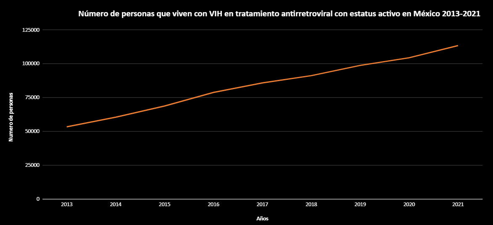
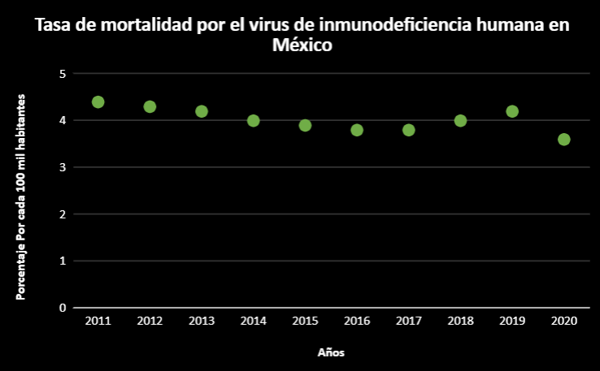
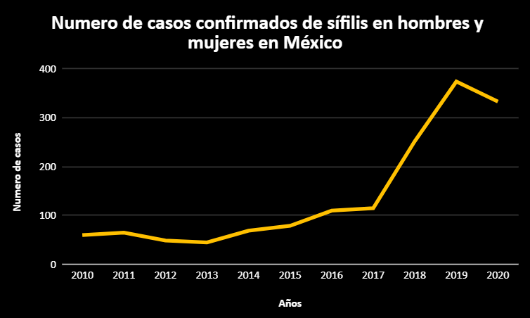
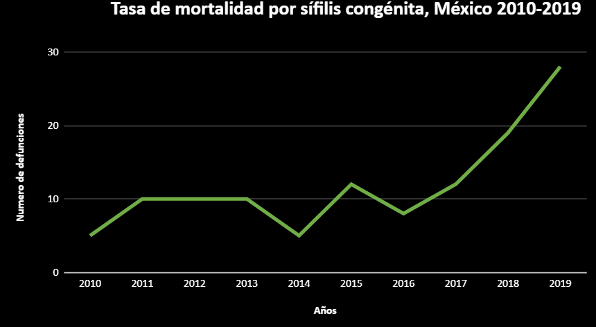

| Años. |
Número de Casos de VIH. |
| 2010 | 11.349 |
| 2011 | 11.086 |
| 2012 | 12.165 |
| 2013 | 11.405 |
| 2014 | 11.025 |
| 2015 | 13.080 |
| 2016 | 13.985 |
| 2017 | 15.010 |
| 2018 | 17.429 |
| 2019 | 17.275 |
| 2020 | 9.674 |
| 2021 | 6.568 |
| Dominio: |
Rango: |
| (-∞,+∞) | [6568,17429] |
| Tipo de función: |
| Polinómica de cuarto grado. |
| Función: |
|
Y=-8.9374x⁴ + 71989.070x³ - 217447645.0336x² + 291917269265.1502x - 146958797117197.9
|
| Intervalos. |
| Crecientes: |
Decrecientes: |
| [2011,2012] [2014,2019] | [2010,2011] [2012,2014] [2019,2021] |
(INEGI, 2021)
|  |
| Esta gráfica muestra el número de personas que tienen VIH en tratamiento antirretroviral con estatus activo en México, acomodada en orden por años del 2013 al 2021. |
Número de personas que viven con VIH en
tratamiento antirretroviral
con estatus activo en México 2013-2021.
| Años: |
Número de personas: |
| 2013 | 53.360 |
| 2015 | 60.464 |
| 2016 | 78.776 |
| 2017 | 85.838 |
| 2018 | 91.194 |
| 2019 | 98.765 |
| 2020 | 104.408 |
| 2021 | 113.408 |
| Dominio: |
Rango: |
| (-∞,+∞) | [53360,113408] |
| Tipo de función: |
| Polinomial cinco. |
| Función: |
| y=-1.7736-72400662.4543 |
| Intervalos. |
| Crecientes: |
Decrecientes: |
| [2005,2021] | 0 |
(INEGI, 2021)
|  |
| Esta gráfica muestra la tasa de mortalidad por el virus de inmunodeficiencia humana en hombres y mujeres en México del año 2011-2020, el porcentaje de muertes es en base a cada 100 mil habitantes. |
Tasa de mortalidad por el virus de
inmunodeficiencia humana en México.
| Años. |
Porcentaje por cada 100 mil habitantes. |
| 2011 | 4.4 |
| 2012 | 4.3 |
| 2013 | 4.2 |
| 2014 | 4 |
| 2015 | 3.9 |
| 2016 | 3.8 |
| 2017 | 3.8 |
| 2018 | 4 |
| 2019 | 4.2 |
| 2020 | 3.6 |
| Dominio. |
Rango. |
| (-∞,+∞) | [3.6,4.4] |
| Tipo de función. |
| Polinómica de cuarto grado. |
| Intervalos. |
| Crecientes: |
Decrecientes: |
| [2017,2019] | [2011,2017] [2019,2020] |
(INEGI, 2021)
|  |
| Esta gráfica muestra el número de casos registrados por año de sífilis, en hombres y mujeres en México. |
Numero de casos confirmados de sífilis
en hombres y mujeres en México.
| Años. |
Número de casos. |
| 2010 | 60 |
| 2011 | 65 |
| 2012 | 49 |
| 2013 | 45 |
| 2014 | 69 |
| 2015 | 79 |
| 2016 | 110 |
| 2017 | 115 |
| 2018 | 252 |
| 2019 | 374 |
| 2020 | 333 |
| Dominio: |
Rango: |
| (-∞,+∞) | [45,333] |
| Tipo de función: |
| Polinómica de cuarto grado. |
| Intervalos. |
| Crecientes: |
Decrecientes: |
| [2010,2011] [2013,2019] | [2011,2013] [2019,2020] |
(Gobierno de México, 2021)
|  |
| Esta gráfica muestra el número de defunciones registradas en México del año 2010 al 2019 . |
Tasa de mortalidad por sífilis congénita, México 2010-2019.
| Años. |
Número de defunciones. |
| 2010 | 5 |
| 2011 | 10 |
| 2012 | 10 |
| 2013 | 10 |
| 2014 | 5 |
| 2015 | 12 |
| 2016 | 8 |
| 2017 | 12 |
| 2018 | 19 |
| 2019 | 28 |
| Dominio. |
Rango. |
| (-∞,+∞) | [5,28] |
| Tipo de función. |
| Polinómica de cuarto grado. |
| Intervalos. |
| Crecientes: |
Decrecientes: |
| [2010,2013] [2014,2015] [2016,2019] | [2013,2014] [2015,2016] |
(Gobierno de México, 2021)